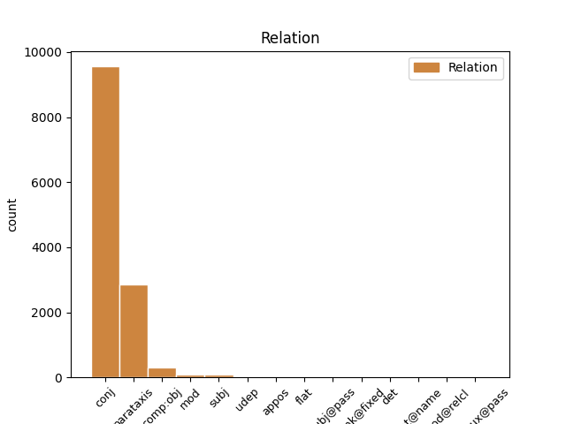
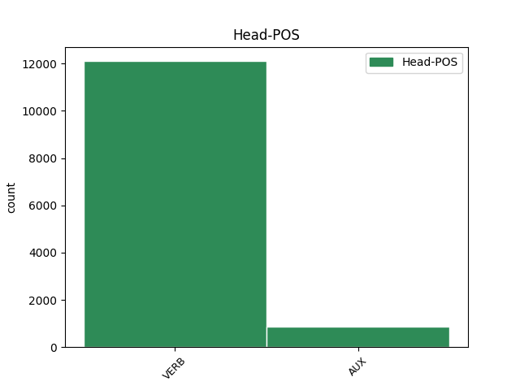
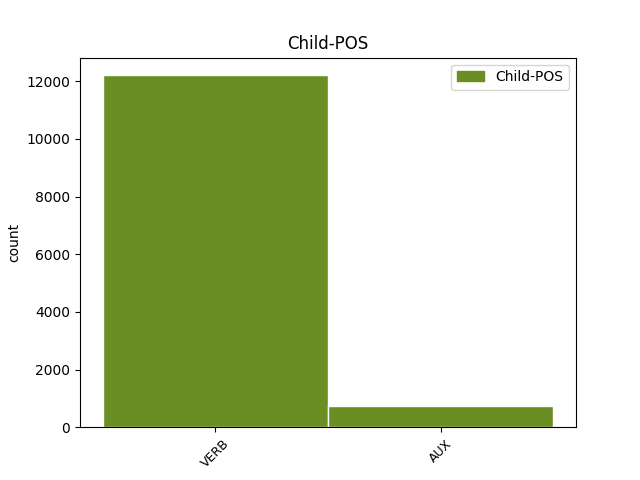

Distribution of features within this leaf



Agreement Rules sorted by frequency.
- When the dependent token is the conjunct(conj) of the head token, and the head token is VERB and the dependent token is VERB.
1 Но _ _ _ _ 0 _ _ _
2 кто-то _ _ _ _ 0 _ _ _
3 идет идти VERB _ Aspect=Imp|Mood=Ind|Number=Sing|Person=3|Tense=Pres|VerbForm=Fin|Voice=Act 0 _ _ _
4 мне _ _ _ _ 0 _ _ _
5 навстречу _ _ _ _ 0 _ _ _
6 и _ _ _ _ 0 _ _ _
7 , _ _ _ _ 0 _ _ _
8 может _ _ _ _ 0 _ _ _
9 быть _ _ _ _ 0 _ _ _
10 , _ _ _ _ 0 _ _ _
11 прошел пройти VERB _ Aspect=Perf|Gender=Masc|Mood=Ind|Number=Sing|Tense=Past|VerbForm=Fin|Voice=Act 3 conj _ _
12 уже _ _ _ _ 0 _ _ _
13 пол _ _ _ _ 0 _ _ _
14 пути _ _ _ _ 0 _ _ _
15 … _ _ _ _ 0 _ _ _
1 Но _ _ _ _ 0 _ _ _
2 кто-то _ _ _ _ 0 _ _ _
3 идет _ _ _ _ 0 _ _ _
4 мне _ _ _ _ 0 _ _ _
5 навстречу _ _ _ _ 0 _ _ _
6 и _ _ _ _ 0 _ _ _
7 , _ _ _ _ 0 _ _ _
8 может мочь VERB _ Aspect=Imp|Mood=Ind|Number=Sing|Person=3|Tense=Pres|VerbForm=Fin|Voice=Act 11 parataxis _ _
9 быть _ _ _ _ 0 _ _ _
10 , _ _ _ _ 0 _ _ _
11 прошел пройти VERB _ Aspect=Perf|Gender=Masc|Mood=Ind|Number=Sing|Tense=Past|VerbForm=Fin|Voice=Act 0 _ _ _
12 уже _ _ _ _ 0 _ _ _
13 пол _ _ _ _ 0 _ _ _
14 пути _ _ _ _ 0 _ _ _
15 … _ _ _ _ 0 _ _ _
1 Весь _ _ _ _ 0 _ _ _
2 лес _ _ _ _ 0 _ _ _
3 был быть AUX _ Aspect=Imp|Gender=Masc|Mood=Ind|Number=Sing|Tense=Past|VerbForm=Fin|Voice=Act 0 _ _ _
4 населен _ _ _ _ 0 _ _ _
5 голосами _ _ _ _ 0 _ _ _
6 прошлого _ _ _ _ 0 _ _ _
7 , _ _ _ _ 0 _ _ _
8 и _ _ _ _ 0 _ _ _
9 я _ _ _ _ 0 _ _ _
10 впервые _ _ _ _ 0 _ _ _
11 с _ _ _ _ 0 _ _ _
12 ошеломляющей _ _ _ _ 0 _ _ _
13 силой _ _ _ _ 0 _ _ _
14 ощутил ощутить VERB _ Aspect=Perf|Gender=Masc|Mood=Ind|Number=Sing|Tense=Past|VerbForm=Fin|Voice=Act 3 conj _ SpaceAfter=No
15 , _ _ _ _ 0 _ _ _
16 как _ _ _ _ 0 _ _ _
17 много _ _ _ _ 0 _ _ _
18 пробыл _ _ _ _ 0 _ _ _
19 на _ _ _ _ 0 _ _ _
20 этом _ _ _ _ 0 _ _ _
21 свете _ _ _ _ 0 _ _ _
22 и _ _ _ _ 0 _ _ _
23 что _ _ _ _ 0 _ _ _
24 прожитое _ _ _ _ 0 _ _ _
25 - _ _ _ _ 0 _ _ _
26 это _ _ _ _ 0 _ _ _
27 не _ _ _ _ 0 _ _ _
28 разбег _ _ _ _ 0 _ _ _
29 для _ _ _ _ 0 _ _ _
30 взлета _ _ _ _ 0 _ _ _
31 в _ _ _ _ 0 _ _ _
32 какую-то _ _ _ _ 0 _ _ _
33 будущую _ _ _ _ 0 _ _ _
34 , _ _ _ _ 0 _ _ _
35 настоящую _ _ _ _ 0 _ _ _
36 жизнь _ _ _ _ 0 _ _ _
37 , _ _ _ _ 0 _ _ _
38 что _ _ _ _ 0 _ _ _
39 это _ _ _ _ 0 _ _ _
40 уже _ _ _ _ 0 _ _ _
41 жизнь _ _ _ _ 0 _ _ _
42 , _ _ _ _ 0 _ _ _
43 в _ _ _ _ 0 _ _ _
44 которой _ _ _ _ 0 _ _ _
45 все _ _ _ _ 0 _ _ _
46 связано _ _ _ _ 0 _ _ _
47 : _ _ _ _ 0 _ _ _
48 далекое _ _ _ _ 0 _ _ _
49 прошлое _ _ _ _ 0 _ _ _
50 с _ _ _ _ 0 _ _ _
51 настоящим _ _ _ _ 0 _ _ _
52 , _ _ _ _ 0 _ _ _
53 а _ _ _ _ 0 _ _ _
54 если _ _ _ _ 0 _ _ _
55 мне _ _ _ _ 0 _ _ _
56 суждено _ _ _ _ 0 _ _ _
57 будущее _ _ _ _ 0 _ _ _
58 , _ _ _ _ 0 _ _ _
59 то _ _ _ _ 0 _ _ _
60 и _ _ _ _ 0 _ _ _
61 оно _ _ _ _ 0 _ _ _
62 окажется _ _ _ _ 0 _ _ _
63 нерасторжимо _ _ _ _ 0 _ _ _
64 связанным _ _ _ _ 0 _ _ _
65 с _ _ _ _ 0 _ _ _
66 пережитым _ _ _ _ 0 _ _ _
67 ; _ _ _ _ 0 _ _ _
1 Это _ _ _ _ 0 _ _ _
2 был _ _ _ _ 0 _ _ _
3 гриб _ _ _ _ 0 _ _ _
4 - _ _ _ _ 0 _ _ _
5 генерал _ _ _ _ 0 _ _ _
6 , _ _ _ _ 0 _ _ _
7 настоящий _ _ _ _ 0 _ _ _
8 предводитель _ _ _ _ 0 _ _ _
9 грибной _ _ _ _ 0 _ _ _
10 рати _ _ _ _ 0 _ _ _
11 , _ _ _ _ 0 _ _ _
12 он _ _ _ _ 0 _ _ _
13 не _ _ _ _ 0 _ _ _
14 мог мочь VERB _ Aspect=Imp|Gender=Masc|Mood=Ind|Number=Sing|Tense=Past|VerbForm=Fin|Voice=Act 0 _ _ _
15 расти _ _ _ _ 0 _ _ _
16 в _ _ _ _ 0 _ _ _
17 одиночку _ _ _ _ 0 _ _ _
18 , _ _ _ _ 0 _ _ _
19 и _ _ _ _ 0 _ _ _
20 надо _ _ _ _ 0 _ _ _
21 было быть AUX _ Aspect=Imp|Gender=Neut|Mood=Ind|Number=Sing|Tense=Past|VerbForm=Fin|Voice=Act 14 conj _ _
22 обрыскать _ _ _ _ 0 _ _ _
23 хвойное _ _ _ _ 0 _ _ _
24 одеяло _ _ _ _ 0 _ _ _
25 у _ _ _ _ 0 _ _ _
26 подножия _ _ _ _ 0 _ _ _
27 ближайших _ _ _ _ 0 _ _ _
28 елей _ _ _ _ 0 _ _ _
29 , _ _ _ _ 0 _ _ _
30 но _ _ _ _ 0 _ _ _
31 я _ _ _ _ 0 _ _ _
32 как-то _ _ _ _ 0 _ _ _
33 ленился _ _ _ _ 0 _ _ _
34 , _ _ _ _ 0 _ _ _
35 и _ _ _ _ 0 _ _ _
36 тут _ _ _ _ 0 _ _ _
37 совсем _ _ _ _ 0 _ _ _
38 отчетливо _ _ _ _ 0 _ _ _
39 , _ _ _ _ 0 _ _ _
40 слышимый _ _ _ _ 0 _ _ _
41 не _ _ _ _ 0 _ _ _
42 внутренним _ _ _ _ 0 _ _ _
43 , _ _ _ _ 0 _ _ _
44 а _ _ _ _ 0 _ _ _
45 внешним _ _ _ _ 0 _ _ _
46 слухом _ _ _ _ 0 _ _ _
47 , _ _ _ _ 0 _ _ _
48 голос _ _ _ _ 0 _ _ _
49 , _ _ _ _ 0 _ _ _
50 исполненный _ _ _ _ 0 _ _ _
51 той _ _ _ _ 0 _ _ _
52 чистой _ _ _ _ 0 _ _ _
53 нежности _ _ _ _ 0 _ _ _
54 , _ _ _ _ 0 _ _ _
55 что _ _ _ _ 0 _ _ _
56 берегла _ _ _ _ 0 _ _ _
57 меня _ _ _ _ 0 _ _ _
58 в _ _ _ _ 0 _ _ _
59 детстве _ _ _ _ 0 _ _ _
60 , _ _ _ _ 0 _ _ _
61 произнес _ _ _ _ 0 _ _ _
62 : _ _ _ _ 0 _ _ _
63 - _ _ _ _ 0 _ _ _
64 Ищи _ _ _ _ 0 _ _ _
65 , _ _ _ _ 0 _ _ _
66 мальчик _ _ _ _ 0 _ _ _
67 , _ _ _ _ 0 _ _ _
68 ты _ _ _ _ 0 _ _ _
69 нырок _ _ _ _ 0 _ _ _
70 ! _ _ _ _ 0 _ _ _
71 . _ _ _ _ 0 _ _ _
72 . _ _ _ _ 0 _ _ _
1 - _ _ _ _ 0 _ _ _
2 Ты _ _ _ _ 0 _ _ _
3 же _ _ _ _ 0 _ _ _
4 видишь видеть VERB _ Aspect=Imp|Mood=Ind|Number=Sing|Person=2|Tense=Pres|VerbForm=Fin|Voice=Act 0 _ _ _
5 , _ _ _ _ 0 _ _ _
6 дорога _ _ _ _ 0 _ _ _
7 заросла зарасти VERB _ Aspect=Perf|Gender=Fem|Mood=Ind|Number=Sing|Tense=Past|VerbForm=Fin|Voice=Act 4 comp:obj _ SpaceAfter=No
8 , _ _ _ _ 0 _ _ _
9 - _ _ _ _ 0 _ _ _
10 он _ _ _ _ 0 _ _ _
11 говорил _ _ _ _ 0 _ _ _
12 , _ _ _ _ 0 _ _ _
13 стоя _ _ _ _ 0 _ _ _
14 на _ _ _ _ 0 _ _ _
15 коленях _ _ _ _ 0 _ _ _
16 , _ _ _ _ 0 _ _ _
17 и _ _ _ _ 0 _ _ _
18 щепкой _ _ _ _ 0 _ _ _
19 выковыривал _ _ _ _ 0 _ _ _
20 из _ _ _ _ 0 _ _ _
21 земли _ _ _ _ 0 _ _ _
22 какой-то _ _ _ _ 0 _ _ _
23 корень _ _ _ _ 0 _ _ _
24 . _ _ _ _ 0 _ _ _
1 Это _ _ _ _ 0 _ _ _
2 был быть AUX _ Aspect=Imp|Gender=Masc|Mood=Ind|Number=Sing|Tense=Past|VerbForm=Fin|Voice=Act 0 _ _ _
3 обычный _ _ _ _ 0 _ _ _
4 день _ _ _ _ 0 _ _ _
5 : _ _ _ _ 0 _ _ _
6 с _ _ _ _ 0 _ _ _
7 утра _ _ _ _ 0 _ _ _
8 я _ _ _ _ 0 _ _ _
9 работал работать VERB _ Aspect=Imp|Gender=Masc|Mood=Ind|Number=Sing|Tense=Past|VerbForm=Fin|Voice=Act 2 parataxis _ SpaceAfter=No
10 , _ _ _ _ 0 _ _ _
11 а _ _ _ _ 0 _ _ _
12 перед _ _ _ _ 0 _ _ _
13 обедом _ _ _ _ 0 _ _ _
14 пошел _ _ _ _ 0 _ _ _
15 в _ _ _ _ 0 _ _ _
16 лес _ _ _ _ 0 _ _ _
17 . _ _ _ _ 0 _ _ _
1 Увидев _ _ _ _ 0 _ _ _
2 меня _ _ _ _ 0 _ _ _
3 в _ _ _ _ 0 _ _ _
4 обновке _ _ _ _ 0 _ _ _
5 , _ _ _ _ 0 _ _ _
6 отец _ _ _ _ 0 _ _ _
7 чуть _ _ _ _ 0 _ _ _
8 не _ _ _ _ 0 _ _ _
9 заплакал заплакать VERB _ Aspect=Perf|Gender=Masc|Mood=Ind|Number=Sing|Tense=Past|VerbForm=Fin|Voice=Act 0 _ _ _
10 - _ _ _ _ 0 _ _ _
11 я _ _ _ _ 0 _ _ _
12 был быть AUX _ Aspect=Imp|Gender=Masc|Mood=Ind|Number=Sing|Tense=Past|VerbForm=Fin|Voice=Act 9 parataxis _ _
13 похож _ _ _ _ 0 _ _ _
14 на _ _ _ _ 0 _ _ _
15 какой-то _ _ _ _ 0 _ _ _
16 ядовитый _ _ _ _ 0 _ _ _
17 стручок _ _ _ _ 0 _ _ _
18 - _ _ _ _ 0 _ _ _
19 и _ _ _ _ 0 _ _ _
20 тут _ _ _ _ 0 _ _ _
21 же _ _ _ _ 0 _ _ _
22 отдал _ _ _ _ 0 _ _ _
23 мне _ _ _ _ 0 _ _ _
24 на _ _ _ _ 0 _ _ _
25 пальто _ _ _ _ 0 _ _ _
26 свой _ _ _ _ 0 _ _ _
27 единственный _ _ _ _ 0 _ _ _
28 выходной _ _ _ _ 0 _ _ _
29 пиджак _ _ _ _ 0 _ _ _
30 . _ _ _ _ 0 _ _ _
1 Был быть AUX _ Aspect=Imp|Gender=Masc|Mood=Ind|Number=Sing|Tense=Past|VerbForm=Fin|Voice=Act 0 _ _ _
2 же _ _ _ _ 0 _ _ _
3 у _ _ _ _ 0 _ _ _
4 него _ _ _ _ 0 _ _ _
5 опыт _ _ _ _ 0 _ _ _
6 собственного _ _ _ _ 0 _ _ _
7 детства _ _ _ _ 0 _ _ _
8 , _ _ _ _ 0 _ _ _
9 был быть AUX _ Aspect=Imp|Gender=Masc|Mood=Ind|Number=Sing|Tense=Past|VerbForm=Fin|Voice=Act 1 conj _ _
10 же _ _ _ _ 0 _ _ _
11 он _ _ _ _ 0 _ _ _
12 сам _ _ _ _ 0 _ _ _
13 ребенком _ _ _ _ 0 _ _ _
14 ! _ _ _ _ 0 _ _ _
1 Дети _ _ _ _ 0 _ _ _
2 часами _ _ _ _ 0 _ _ _
3 могли _ _ _ _ 0 _ _ _
4 следить _ _ _ _ 0 _ _ _
5 за _ _ _ _ 0 _ _ _
6 дятлом _ _ _ _ 0 _ _ _
7 , _ _ _ _ 0 _ _ _
8 который _ _ _ _ 0 _ _ _
9 с _ _ _ _ 0 _ _ _
10 таким _ _ _ _ 0 _ _ _
11 неистовством _ _ _ _ 0 _ _ _
12 долбил _ _ _ _ 0 _ _ _
13 клювом _ _ _ _ 0 _ _ _
14 сосну _ _ _ _ 0 _ _ _
15 , _ _ _ _ 0 _ _ _
16 что _ _ _ _ 0 _ _ _
17 казалось казаться VERB _ Aspect=Imp|Gender=Neut|Mood=Ind|Number=Sing|Tense=Past|VerbForm=Fin|Voice=Mid 0 _ _ _
18 , _ _ _ _ 0 _ _ _
19 вот-вот _ _ _ _ 0 _ _ _
20 отвалится отвалиться VERB _ Aspect=Perf|Mood=Ind|Number=Sing|Person=3|Tense=Fut|VerbForm=Fin|Voice=Mid 17 subj _ _
21 его _ _ _ _ 0 _ _ _
22 остренькая _ _ _ _ 0 _ _ _
23 головка _ _ _ _ 0 _ _ _
24 . _ _ _ _ 0 _ _ _
1 В _ _ _ _ 0 _ _ _
2 то _ _ _ _ 0 _ _ _
3 время _ _ _ _ 0 _ _ _
4 как _ _ _ _ 0 _ _ _
5 современные _ _ _ _ 0 _ _ _
6 производительные _ _ _ _ 0 _ _ _
7 силы _ _ _ _ 0 _ _ _
8 в _ _ _ _ 0 _ _ _
9 одних _ _ _ _ 0 _ _ _
10 странах _ _ _ _ 0 _ _ _
11 развиваются развиваться VERB _ Aspect=Imp|Mood=Ind|Number=Plur|Person=3|Tense=Pres|VerbForm=Fin|Voice=Mid 33 mod _ _
12 на _ _ _ _ 0 _ _ _
13 капиталистической _ _ _ _ 0 _ _ _
14 экономической _ _ _ _ 0 _ _ _
15 основе _ _ _ _ 0 _ _ _
16 ( _ _ _ _ 0 _ _ _
17 во _ _ _ _ 0 _ _ _
18 всяком _ _ _ _ 0 _ _ _
19 случае _ _ _ _ 0 _ _ _
20 последняя _ _ _ _ 0 _ _ _
21 дает _ _ _ _ 0 _ _ _
22 еще _ _ _ _ 0 _ _ _
23 для _ _ _ _ 0 _ _ _
24 них _ _ _ _ 0 _ _ _
25 определенный _ _ _ _ 0 _ _ _
26 стимул _ _ _ _ 0 _ _ _
27 ) _ _ _ _ 0 _ _ _
28 , _ _ _ _ 0 _ _ _
29 поступательное _ _ _ _ 0 _ _ _
30 движение _ _ _ _ 0 _ _ _
31 других _ _ _ _ 0 _ _ _
32 стран _ _ _ _ 0 _ _ _
33 осуществляется осуществляться VERB _ Aspect=Imp|Mood=Ind|Number=Sing|Person=3|Tense=Pres|VerbForm=Fin|Voice=Mid 0 _ _ _
34 в _ _ _ _ 0 _ _ _
35 рамках _ _ _ _ 0 _ _ _
36 социалистического _ _ _ _ 0 _ _ _
37 выбора _ _ _ _ 0 _ _ _
38 . _ _ _ _ 0 _ _ _
1 Все _ _ _ _ 0 _ _ _
2 началось _ _ _ _ 0 _ _ _
3 , _ _ _ _ 0 _ _ _
4 как _ _ _ _ 0 _ _ _
5 и _ _ _ _ 0 _ _ _
6 обычно _ _ _ _ 0 _ _ _
7 начинаются _ _ _ _ 0 _ _ _
8 человеческие _ _ _ _ 0 _ _ _
9 невзгоды _ _ _ _ 0 _ _ _
10 , _ _ _ _ 0 _ _ _
11 с _ _ _ _ 0 _ _ _
12 чего-то _ _ _ _ 0 _ _ _
13 совсем _ _ _ _ 0 _ _ _
14 незначительного _ _ _ _ 0 _ _ _
15 , _ _ _ _ 0 _ _ _
16 что _ _ _ _ 0 _ _ _
17 пропускаешь _ _ _ _ 0 _ _ _
18 мимо _ _ _ _ 0 _ _ _
19 себя _ _ _ _ 0 _ _ _
20 , _ _ _ _ 0 _ _ _
21 а _ _ _ _ 0 _ _ _
22 потом _ _ _ _ 0 _ _ _
23 с _ _ _ _ 0 _ _ _
24 досадой _ _ _ _ 0 _ _ _
25 , _ _ _ _ 0 _ _ _
26 сожалением _ _ _ _ 0 _ _ _
27 и _ _ _ _ 0 _ _ _
28 болью _ _ _ _ 0 _ _ _
29 думаешь думать VERB _ Aspect=Imp|Mood=Ind|Number=Sing|Person=2|Tense=Pres|VerbForm=Fin|Voice=Act 0 _ _ _
30 : _ _ _ _ 0 _ _ _
31 почему _ _ _ _ 0 _ _ _
32 был быть AUX _ Aspect=Imp|Gender=Masc|Mood=Ind|Number=Sing|Tense=Past|VerbForm=Fin|Voice=Act 29 udep _ _
33 я _ _ _ _ 0 _ _ _
34 так _ _ _ _ 0 _ _ _
35 беспечен _ _ _ _ 0 _ _ _
36 , _ _ _ _ 0 _ _ _
37 почему _ _ _ _ 0 _ _ _
38 не _ _ _ _ 0 _ _ _
39 разгадал _ _ _ _ 0 _ _ _
40 врага _ _ _ _ 0 _ _ _
41 в _ _ _ _ 0 _ _ _
42 его _ _ _ _ 0 _ _ _
43 первом _ _ _ _ 0 _ _ _
44 смутном _ _ _ _ 0 _ _ _
45 обличье _ _ _ _ 0 _ _ _
46 ? _ _ _ _ 0 _ _ _
1 Синергизм _ _ _ _ 0 _ _ _
2 хемолюминесценции _ _ _ _ 0 _ _ _
3 можно _ _ _ _ 0 _ _ _
4 было быть AUX _ Aspect=Imp|Gender=Neut|Mood=Ind|Number=Sing|Tense=Past|VerbForm=Fin|Voice=Act 0 _ _ _
5 наблюдать _ _ _ _ 0 _ _ _
6 при _ _ _ _ 0 _ _ _
7 исчезающе _ _ _ _ 0 _ _ _
8 малых _ _ _ _ 0 _ _ _
9 концентрациях _ _ _ _ 0 _ _ _
10 второго _ _ _ _ 0 _ _ _
11 катализатора _ _ _ _ 0 _ _ _
12 - _ _ _ _ 0 _ _ _
13 атомов _ _ _ _ 0 _ _ _
14 рутения _ _ _ _ 0 _ _ _
15 в _ _ _ _ 0 _ _ _
16 растворе _ _ _ _ 0 _ _ _
17 было быть AUX _ Aspect=Imp|Gender=Neut|Mood=Ind|Number=Sing|Tense=Past|VerbForm=Fin|Voice=Act 4 parataxis _ _
18 в _ _ _ _ 0 _ _ _
19 100000 _ _ _ _ 0 _ _ _
20 раз _ _ _ _ 0 _ _ _
21 меньше _ _ _ _ 0 _ _ _
22 , _ _ _ _ 0 _ _ _
23 чем _ _ _ _ 0 _ _ _
24 атомов _ _ _ _ 0 _ _ _
25 церия _ _ _ _ 0 _ _ _
26 , _ _ _ _ 0 _ _ _
27 а _ _ _ _ 0 _ _ _
28 интенсивность _ _ _ _ 0 _ _ _
29 светового _ _ _ _ 0 _ _ _
30 потока _ _ _ _ 0 _ _ _
31 при _ _ _ _ 0 _ _ _
32 этом _ _ _ _ 0 _ _ _
33 возрастала _ _ _ _ 0 _ _ _
34 в _ _ _ _ 0 _ _ _
35 100 _ _ _ _ 0 _ _ _
36 раз _ _ _ _ 0 _ _ _
37 . _ _ _ _ 0 _ _ _
1 Потом _ _ _ _ 0 _ _ _
2 органическая _ _ _ _ 0 _ _ _
3 фаза _ _ _ _ 0 _ _ _
4 отслаивается отслаиваться VERB _ Aspect=Imp|Mood=Ind|Number=Sing|Person=3|Tense=Pres|VerbForm=Fin|Voice=Mid 0 _ _ _
5 ( _ _ _ _ 0 _ _ _
6 она _ _ _ _ 0 _ _ _
7 не _ _ _ _ 0 _ _ _
8 смешивается смешиваться VERB _ Aspect=Imp|Mood=Ind|Number=Sing|Person=3|Tense=Pres|VerbForm=Fin|Voice=Mid 4 appos _ _
9 с _ _ _ _ 0 _ _ _
10 водой _ _ _ _ 0 _ _ _
11 ) _ _ _ _ 0 _ _ _
12 и _ _ _ _ 0 _ _ _
13 поступает _ _ _ _ 0 _ _ _
14 в _ _ _ _ 0 _ _ _
15 реэкстрактор _ _ _ _ 0 _ _ _
16 . _ _ _ _ 0 _ _ _
1 Мне _ _ _ _ 0 _ _ _
2 не _ _ _ _ 0 _ _ _
3 очень _ _ _ _ 0 _ _ _
4 - _ _ _ _ 0 _ _ _
5 то _ _ _ _ 0 _ _ _
6 было быть AUX _ Aspect=Imp|Gender=Neut|Mood=Ind|Number=Sing|Tense=Past|VerbForm=Fin|Voice=Act 0 _ _ _
7 понятно _ _ _ _ 0 _ _ _
8 , _ _ _ _ 0 _ _ _
9 что _ _ _ _ 0 _ _ _
10 значит значить VERB _ Aspect=Imp|Mood=Ind|Number=Sing|Person=3|Tense=Pres|VerbForm=Fin|Voice=Act 6 subj _ _
11 слово _ _ _ _ 0 _ _ _
12 " _ _ _ _ 0 _ _ _
13 арестовать _ _ _ _ 0 _ _ _
14 " _ _ _ _ 0 _ _ _
15 . _ _ _ _ 0 _ _ _
1 - _ _ _ _ 0 _ _ _
2 А _ _ _ _ 0 _ _ _
3 я _ _ _ _ 0 _ _ _
4 тебя _ _ _ _ 0 _ _ _
5 снегом _ _ _ _ 0 _ _ _
6 тру тереть VERB _ Aspect=Imp|Mood=Ind|Number=Sing|Person=1|Tense=Pres|VerbForm=Fin|Voice=Act 0 _ _ _
7 - _ _ _ _ 0 _ _ _
8 тру тереть VERB _ Aspect=Imp|Mood=Ind|Number=Sing|Person=1|Tense=Pres|VerbForm=Fin|Voice=Act 6 flat _ SpaceAfter=No
9 , _ _ _ _ 0 _ _ _
10 совсем _ _ _ _ 0 _ _ _
11 было _ _ _ _ 0 _ _ _
12 уши _ _ _ _ 0 _ _ _
13 отморозил _ _ _ _ 0 _ _ _
14 . _ _ _ _ 0 _ _ _
1 Как _ _ _ _ 0 _ _ _
2 он _ _ _ _ 0 _ _ _
3 был быть AUX _ Aspect=Imp|Gender=Masc|Mood=Ind|Number=Sing|Tense=Past|VerbForm=Fin|Voice=Act 8 comp:obj _ _
4 ранен _ _ _ _ 0 _ _ _
5 , _ _ _ _ 0 _ _ _
6 Сергей _ _ _ _ 0 _ _ _
7 не _ _ _ _ 0 _ _ _
8 помнит помнить VERB _ Aspect=Imp|Mood=Ind|Number=Sing|Person=3|Tense=Pres|VerbForm=Fin|Voice=Act 0 _ _ _
9 . _ _ _ _ 0 _ _ _
1 Подумалось думаться VERB _ Aspect=Perf|Gender=Neut|Mood=Ind|Number=Sing|Tense=Past|VerbForm=Fin|Voice=Mid 0 _ _ _
2 : _ _ _ _ 0 _ _ _
3 каким _ _ _ _ 0 _ _ _
4 же _ _ _ _ 0 _ _ _
5 сильным _ _ _ _ 0 _ _ _
6 и _ _ _ _ 0 _ _ _
7 бездушным _ _ _ _ 0 _ _ _
8 должен _ _ _ _ 0 _ _ _
9 был быть AUX _ Aspect=Imp|Gender=Masc|Mood=Ind|Number=Sing|Tense=Past|VerbForm=Fin|Voice=Act 1 subj _ _
10 быть _ _ _ _ 0 _ _ _
11 " _ _ _ _ 0 _ _ _
12 свинтус _ _ _ _ 0 _ _ _
13 грандиозус _ _ _ _ 0 _ _ _
14 " _ _ _ _ 0 _ _ _
15 , _ _ _ _ 0 _ _ _
16 своим _ _ _ _ 0 _ _ _
17 рылом _ _ _ _ 0 _ _ _
18 перевернувший _ _ _ _ 0 _ _ _
19 , _ _ _ _ 0 _ _ _
20 изувечивший _ _ _ _ 0 _ _ _
21 , _ _ _ _ 0 _ _ _
22 испоганивший _ _ _ _ 0 _ _ _
23 землю _ _ _ _ 0 _ _ _
24 , _ _ _ _ 0 _ _ _
25 которая _ _ _ _ 0 _ _ _
26 кормила _ _ _ _ 0 _ _ _
27 человека _ _ _ _ 0 _ _ _
28 , _ _ _ _ 0 _ _ _
29 была _ _ _ _ 0 _ _ _
30 ему _ _ _ _ 0 _ _ _
31 родиной _ _ _ _ 0 _ _ _
32 ! _ _ _ _ 0 _ _ _
1 Какие _ _ _ _ 0 _ _ _
2 бы _ _ _ _ 0 _ _ _
3 цели _ _ _ _ 0 _ _ _
4 ни _ _ _ _ 0 _ _ _
5 преследовали преследовать VERB _ Aspect=Imp|Mood=Ind|Number=Plur|Tense=Past|VerbForm=Fin|Voice=Act 13 mod _ _
6 противники _ _ _ _ 0 _ _ _
7 " _ _ _ _ 0 _ _ _
8 Pussy _ _ _ _ 0 _ _ _
9 Riot _ _ _ _ 0 _ _ _
10 " _ _ _ _ 0 _ _ _
11 , _ _ _ _ 0 _ _ _
12 объективно _ _ _ _ 0 _ _ _
13 было быть AUX _ Aspect=Imp|Gender=Neut|Mood=Ind|Number=Sing|Tense=Past|VerbForm=Fin|Voice=Act 0 _ _ _
14 в _ _ _ _ 0 _ _ _
15 очередной _ _ _ _ 0 _ _ _
16 раз _ _ _ _ 0 _ _ _
17 продемонстрировано _ _ _ _ 0 _ _ _
18 , _ _ _ _ 0 _ _ _
19 что _ _ _ _ 0 _ _ _
20 современному _ _ _ _ 0 _ _ _
21 российскому _ _ _ _ 0 _ _ _
22 политическому _ _ _ _ 0 _ _ _
23 режиму _ _ _ _ 0 _ _ _
24 недостаточно _ _ _ _ 0 _ _ _
25 заявленной _ _ _ _ 0 _ _ _
26 в _ _ _ _ 0 _ _ _
27 Конституции _ _ _ _ 0 _ _ _
28 легитимации _ _ _ _ 0 _ _ _
29 волей _ _ _ _ 0 _ _ _
30 народа _ _ _ _ 0 _ _ _
31 . _ _ _ _ 0 _ _ _
1 Первый _ _ _ _ 0 _ _ _
2 опыт _ _ _ _ 0 _ _ _
3 не _ _ _ _ 0 _ _ _
4 был _ _ _ _ 0 _ _ _
5 доведен _ _ _ _ 0 _ _ _
6 до _ _ _ _ 0 _ _ _
7 конца _ _ _ _ 0 _ _ _
8 : _ _ _ _ 0 _ _ _
9 ассистент _ _ _ _ 0 _ _ _
10 , _ _ _ _ 0 _ _ _
11 помогавший _ _ _ _ 0 _ _ _
12 Форсману _ _ _ _ 0 _ _ _
13 , _ _ _ _ 0 _ _ _
14 отказался отказаться VERB _ Aspect=Perf|Gender=Masc|Mood=Ind|Number=Sing|Tense=Past|VerbForm=Fin|Voice=Mid 0 _ _ _
15 продвигать _ _ _ _ 0 _ _ _
16 зонд _ _ _ _ 0 _ _ _
17 внутрь _ _ _ _ 0 _ _ _
18 сердца _ _ _ _ 0 _ _ _
19 - _ _ _ _ 0 _ _ _
20 " _ _ _ _ 0 _ _ _
21 вам _ _ _ _ 0 _ _ _
22 будет быть AUX _ Aspect=Imp|Mood=Ind|Number=Sing|Person=3|Tense=Pres|VerbForm=Fin|Voice=Act 14 mod _ _
23 уже _ _ _ _ 0 _ _ _
24 все _ _ _ _ 0 _ _ _
25 равно _ _ _ _ 0 _ _ _
26 , _ _ _ _ 0 _ _ _
27 а _ _ _ _ 0 _ _ _
28 мне _ _ _ _ 0 _ _ _
29 отвечать _ _ _ _ 0 _ _ _
30 " _ _ _ _ 0 _ _ _
31 . _ _ _ _ 0 _ _ _
1 Раньше _ _ _ _ 0 _ _ _
2 считалось считать VERB _ Aspect=Imp|Gender=Neut|Mood=Ind|Number=Sing|Tense=Past|VerbForm=Fin|Voice=Pass 0 _ _ _
3 , _ _ _ _ 0 _ _ _
4 да _ _ _ _ 0 _ _ _
5 и _ _ _ _ 0 _ _ _
6 сейчас _ _ _ _ 0 _ _ _
7 от _ _ _ _ 0 _ _ _
8 этого _ _ _ _ 0 _ _ _
9 еще _ _ _ _ 0 _ _ _
10 не _ _ _ _ 0 _ _ _
11 избавились _ _ _ _ 0 _ _ _
12 , _ _ _ _ 0 _ _ _
13 выступить _ _ _ _ 0 _ _ _
14 против _ _ _ _ 0 _ _ _
15 какого-то _ _ _ _ 0 _ _ _
16 - _ _ _ _ 0 _ _ _
17 конкретного _ _ _ _ 0 _ _ _
18 советского _ _ _ _ 0 _ _ _
19 или _ _ _ _ 0 _ _ _
20 партийного _ _ _ _ 0 _ _ _
21 руководителя _ _ _ _ 0 _ _ _
22 , _ _ _ _ 0 _ _ _
23 который _ _ _ _ 0 _ _ _
24 санкционировал _ _ _ _ 0 _ _ _
25 неумное _ _ _ _ 0 _ _ _
26 решение _ _ _ _ 0 _ _ _
27 , _ _ _ _ 0 _ _ _
28 - _ _ _ _ 0 _ _ _
29 значит значить VERB _ Aspect=Imp|Mood=Ind|Number=Sing|Person=3|Tense=Pres|VerbForm=Fin|Voice=Act 2 subj@pass _ _
30 выступить _ _ _ _ 0 _ _ _
31 против _ _ _ _ 0 _ _ _
32 Советской _ _ _ _ 0 _ _ _
33 власти _ _ _ _ 0 _ _ _
34 или _ _ _ _ 0 _ _ _
35 против _ _ _ _ 0 _ _ _
36 партии _ _ _ _ 0 _ _ _
37 . _ _ _ _ 0 _ _ _
1 Были быть VERB _ Aspect=Imp|Mood=Ind|Number=Plur|Tense=Past|VerbForm=Fin|Voice=Act 0 _ _ _
2 цветы _ _ _ _ 0 _ _ _
3 , _ _ _ _ 0 _ _ _
4 похожие _ _ _ _ 0 _ _ _
5 на _ _ _ _ 0 _ _ _
6 садовые _ _ _ _ 0 _ _ _
7 бессмертники _ _ _ _ 0 _ _ _
8 , _ _ _ _ 0 _ _ _
9 но _ _ _ _ 0 _ _ _
10 не _ _ _ _ 0 _ _ _
11 сухие _ _ _ _ 0 _ _ _
12 , _ _ _ _ 0 _ _ _
13 а _ _ _ _ 0 _ _ _
14 трепетно _ _ _ _ 0 _ _ _
15 - _ _ _ _ 0 _ _ _
16 мягкие _ _ _ _ 0 _ _ _
17 , _ _ _ _ 0 _ _ _
18 полные _ _ _ _ 0 _ _ _
19 в _ _ _ _ 0 _ _ _
20 каждом _ _ _ _ 0 _ _ _
21 лепестке _ _ _ _ 0 _ _ _
22 нежной _ _ _ _ 0 _ _ _
23 , _ _ _ _ 0 _ _ _
24 непрочной _ _ _ _ 0 _ _ _
25 жизни _ _ _ _ 0 _ _ _
26 , _ _ _ _ 0 _ _ _
27 с _ _ _ _ 0 _ _ _
28 оранжевым _ _ _ _ 0 _ _ _
29 венчиком _ _ _ _ 0 _ _ _
30 и _ _ _ _ 0 _ _ _
31 синей _ _ _ _ 0 _ _ _
32 короной _ _ _ _ 0 _ _ _
33 ; _ _ _ _ 0 _ _ _
34 были _ _ _ _ 0 _ _ _
35 , _ _ _ _ 0 _ _ _
36 как _ _ _ _ 0 _ _ _
37 садовые _ _ _ _ 0 _ _ _
38 лилии _ _ _ _ 0 _ _ _
39 , _ _ _ _ 0 _ _ _
40 целые _ _ _ _ 0 _ _ _
41 лужайки _ _ _ _ 0 _ _ _
42 палевых _ _ _ _ 0 _ _ _
43 , _ _ _ _ 0 _ _ _
44 навощенных _ _ _ _ 0 _ _ _
45 , _ _ _ _ 0 _ _ _
46 лилий _ _ _ _ 0 _ _ _
47 на _ _ _ _ 0 _ _ _
48 длинных _ _ _ _ 0 _ _ _
49 , _ _ _ _ 0 _ _ _
50 стройных _ _ _ _ 0 _ _ _
51 стеблях _ _ _ _ 0 _ _ _
52 с _ _ _ _ 0 _ _ _
53 саблеобразными _ _ _ _ 0 _ _ _
54 листьями _ _ _ _ 0 _ _ _
55 ; _ _ _ _ 0 _ _ _
56 были _ _ _ _ 0 _ _ _
57 , _ _ _ _ 0 _ _ _
58 как _ _ _ _ 0 _ _ _
59 махровая _ _ _ _ 0 _ _ _
60 гвоздика _ _ _ _ 0 _ _ _
61 , _ _ _ _ 0 _ _ _
62 но _ _ _ _ 0 _ _ _
63 пышнее _ _ _ _ 0 _ _ _
64 и _ _ _ _ 0 _ _ _
65 всех _ _ _ _ 0 _ _ _
66 расцветок _ _ _ _ 0 _ _ _
67 , _ _ _ _ 0 _ _ _
68 от _ _ _ _ 0 _ _ _
69 фиолетового _ _ _ _ 0 _ _ _
70 до _ _ _ _ 0 _ _ _
71 бордового _ _ _ _ 0 _ _ _
72 ; _ _ _ _ 0 _ _ _
73 были быть AUX _ Aspect=Imp|Mood=Ind|Number=Plur|Tense=Past|VerbForm=Fin|Voice=Act 1 det _ _
74 и _ _ _ _ 0 _ _ _
75 такие _ _ _ _ 0 _ _ _
76 , _ _ _ _ 0 _ _ _
77 что _ _ _ _ 0 _ _ _
78 не _ _ _ _ 0 _ _ _
79 сравнишь _ _ _ _ 0 _ _ _
80 и _ _ _ _ 0 _ _ _
81 не _ _ _ _ 0 _ _ _
82 опишешь _ _ _ _ 0 _ _ _
83 , _ _ _ _ 0 _ _ _
84 словно _ _ _ _ 0 _ _ _
85 фантастические _ _ _ _ 0 _ _ _
86 гибриды _ _ _ _ 0 _ _ _
87 василька _ _ _ _ 0 _ _ _
88 с _ _ _ _ 0 _ _ _
89 георгином _ _ _ _ 0 _ _ _
90 , _ _ _ _ 0 _ _ _
91 ромашки _ _ _ _ 0 _ _ _
92 с _ _ _ _ 0 _ _ _
93 настурцией _ _ _ _ 0 _ _ _
94 , _ _ _ _ 0 _ _ _
95 причудливые _ _ _ _ 0 _ _ _
96 , _ _ _ _ 0 _ _ _
97 сказочные _ _ _ _ 0 _ _ _
98 цветы _ _ _ _ 0 _ _ _
99 с _ _ _ _ 0 _ _ _
100 длиннющими _ _ _ _ 0 _ _ _
101 пестиками _ _ _ _ 0 _ _ _
102 , _ _ _ _ 0 _ _ _
103 торчащими _ _ _ _ 0 _ _ _
104 , _ _ _ _ 0 _ _ _
105 будто _ _ _ _ 0 _ _ _
106 щупальца _ _ _ _ 0 _ _ _
107 , _ _ _ _ 0 _ _ _
108 из _ _ _ _ 0 _ _ _
109 глубокой _ _ _ _ 0 _ _ _
110 , _ _ _ _ 0 _ _ _
111 слоистой _ _ _ _ 0 _ _ _
112 чашки _ _ _ _ 0 _ _ _
113 . _ _ _ _ 0 _ _ _
1 Родственник _ _ _ _ 0 _ _ _
2 Камалова _ _ _ _ 0 _ _ _
3 прокурор _ _ _ _ 0 _ _ _
4 города _ _ _ _ 0 _ _ _
5 Уфы _ _ _ _ 0 _ _ _
6 Зайнетдинов _ _ _ _ 0 _ _ _
7 , _ _ _ _ 0 _ _ _
8 пишет _ _ _ _ 0 _ _ _
9 в _ _ _ _ 0 _ _ _
10 " _ _ _ _ 0 _ _ _
11 Правду _ _ _ _ 0 _ _ _
12 " _ _ _ _ 0 _ _ _
13 Р. _ _ _ _ 0 _ _ _
14 Богданов _ _ _ _ 0 _ _ _
15 , _ _ _ _ 0 _ _ _
16 фабрикует _ _ _ _ 0 _ _ _
17 уголовное _ _ _ _ 0 _ _ _
18 дело _ _ _ _ 0 _ _ _
19 , _ _ _ _ 0 _ _ _
20 и _ _ _ _ 0 _ _ _
21 пошло пойти VERB _ Aspect=Perf|Gender=Neut|Mood=Ind|Number=Sing|Tense=Past|VerbForm=Fin|Voice=Act 0 _ _ _
22 - _ _ _ _ 0 _ _ _
23 поехало поехать VERB _ Aspect=Perf|Gender=Neut|Mood=Ind|Number=Sing|Tense=Past|VerbForm=Fin|Voice=Act 21 unk@fixed _ _
24 следствие _ _ _ _ 0 _ _ _
25 , _ _ _ _ 0 _ _ _
26 принудительная _ _ _ _ 0 _ _ _
27 судебно-психиатрическая _ _ _ _ 0 _ _ _
28 экспертиза _ _ _ _ 0 _ _ _
29 , _ _ _ _ 0 _ _ _
30 лишение _ _ _ _ 0 _ _ _
31 депутатского _ _ _ _ 0 _ _ _
32 мандата _ _ _ _ 0 _ _ _
33 , _ _ _ _ 0 _ _ _
34 партийности _ _ _ _ 0 _ _ _
35 . _ _ _ _ 0 _ _ _
1 Сижу _ _ _ _ 0 _ _ _
2 со _ _ _ _ 0 _ _ _
3 старенькой _ _ _ _ 0 _ _ _
4 бабушкой _ _ _ _ 0 _ _ _
5 - _ _ _ _ 0 _ _ _
6 Мария _ _ _ _ 0 _ _ _
7 Ивановна _ _ _ _ 0 _ _ _
8 Тюленева _ _ _ _ 0 _ _ _
9 , _ _ _ _ 0 _ _ _
10 ей _ _ _ _ 0 _ _ _
11 92 _ _ _ _ 0 _ _ _
12 годка _ _ _ _ 0 _ _ _
13 , _ _ _ _ 0 _ _ _
14 и _ _ _ _ 0 _ _ _
15 спрашиваю _ _ _ _ 0 _ _ _
16 : _ _ _ _ 0 _ _ _
17 " _ _ _ _ 0 _ _ _
18 Баба _ _ _ _ 0 _ _ _
19 Маня _ _ _ _ 0 _ _ _
20 , _ _ _ _ 0 _ _ _
21 а _ _ _ _ 0 _ _ _
22 правда _ _ _ _ 0 _ _ _
23 , _ _ _ _ 0 _ _ _
24 что _ _ _ _ 0 _ _ _
25 ночна _ _ _ _ 0 _ _ _
26 кукушка _ _ _ _ 0 _ _ _
27 всё _ _ _ _ 0 _ _ _
28 равно _ _ _ _ 0 _ _ _
29 перекукует _ _ _ _ 0 _ _ _
30 ? _ _ _ _ 0 _ _ _
31 " _ _ _ _ 0 _ _ _
32 Она _ _ _ _ 0 _ _ _
33 отвечает _ _ _ _ 0 _ _ _
34 : _ _ _ _ 0 _ _ _
35 " _ _ _ _ 0 _ _ _
36 Перекукует перекуковать VERB _ Aspect=Perf|Mood=Ind|Number=Sing|Person=3|Tense=Fut|VerbForm=Fin|Voice=Act 0 _ _ _
37 - _ _ _ _ 0 _ _ _
38 то _ _ _ _ 0 _ _ _
39 перекукует перекуковать VERB _ Aspect=Perf|Mood=Ind|Number=Sing|Person=3|Tense=Fut|VerbForm=Fin|Voice=Act 36 flat@name _ SpaceAfter=No
40 , _ _ _ _ 0 _ _ _
41 дак _ _ _ _ 0 _ _ _
42 справедливо _ _ _ _ 0 _ _ _
43 куковать _ _ _ _ 0 _ _ _
44 - _ _ _ _ 0 _ _ _
45 то _ _ _ _ 0 _ _ _
46 надо _ _ _ _ 0 _ _ _
47 . _ _ _ _ 0 _ _ _
1 Что _ _ _ _ 0 _ _ _
2 в _ _ _ _ 0 _ _ _
3 этих _ _ _ _ 0 _ _ _
4 рассказах _ _ _ _ 0 _ _ _
5 было _ _ _ _ 0 _ _ _
6 правдой _ _ _ _ 0 _ _ _
7 , _ _ _ _ 0 _ _ _
8 а _ _ _ _ 0 _ _ _
9 что _ _ _ _ 0 _ _ _
10 выдумкой _ _ _ _ 0 _ _ _
11 - _ _ _ _ 0 _ _ _
12 поди пойти VERB _ Aspect=Perf|Mood=Imp|Number=Sing|Person=2|VerbForm=Fin|Voice=Act 13 udep _ _
13 разбери разобрать VERB _ Aspect=Perf|Mood=Imp|Number=Sing|Person=2|VerbForm=Fin|Voice=Act 0 _ _ _
14 . _ _ _ _ 0 _ _ _
1 Для _ _ _ _ 0 _ _ _
2 меня _ _ _ _ 0 _ _ _
3 было быть AUX _ Aspect=Imp|Gender=Neut|Mood=Ind|Number=Sing|Tense=Past|VerbForm=Fin|Voice=Act 0 _ _ _
4 важно _ _ _ _ 0 _ _ _
5 , _ _ _ _ 0 _ _ _
6 как _ _ _ _ 0 _ _ _
7 я _ _ _ _ 0 _ _ _
8 сам _ _ _ _ 0 _ _ _
9 себя _ _ _ _ 0 _ _ _
10 буду быть AUX _ Aspect=Imp|Mood=Ind|Number=Sing|Person=1|Tense=Pres|VerbForm=Fin|Voice=Act 3 subj _ _
11 чувствовать _ _ _ _ 0 _ _ _
12 и _ _ _ _ 0 _ _ _
13 как _ _ _ _ 0 _ _ _
14 себя _ _ _ _ 0 _ _ _
15 будут _ _ _ _ 0 _ _ _
16 чувствовать _ _ _ _ 0 _ _ _
17 мои _ _ _ _ 0 _ _ _
18 дети _ _ _ _ 0 _ _ _
19 . _ _ _ _ 0 _ _ _
1 Вообще _ _ _ _ 0 _ _ _
2 - _ _ _ _ 0 _ _ _
3 то _ _ _ _ 0 _ _ _
4 , _ _ _ _ 0 _ _ _
5 она _ _ _ _ 0 _ _ _
6 была быть AUX _ Aspect=Imp|Gender=Fem|Mood=Ind|Number=Sing|Tense=Past|VerbForm=Fin|Voice=Act 0 _ _ _
7 безответна _ _ _ _ 0 _ _ _
8 , _ _ _ _ 0 _ _ _
9 и _ _ _ _ 0 _ _ _
10 ей _ _ _ _ 0 _ _ _
11 все _ _ _ _ 0 _ _ _
12 равно _ _ _ _ 0 _ _ _
13 было быть AUX _ Aspect=Imp|Gender=Neut|Mood=Ind|Number=Sing|Tense=Past|VerbForm=Fin|Voice=Act 6 mod _ SpaceAfter=No
14 , _ _ _ _ 0 _ _ _
15 за _ _ _ _ 0 _ _ _
16 кого _ _ _ _ 0 _ _ _
17 выходить _ _ _ _ 0 _ _ _
18 замуж _ _ _ _ 0 _ _ _
19 , _ _ _ _ 0 _ _ _
20 лишь _ _ _ _ 0 _ _ _
21 бы _ _ _ _ 0 _ _ _
22 жених _ _ _ _ 0 _ _ _
23 был _ _ _ _ 0 _ _ _
24 на _ _ _ _ 0 _ _ _
25 лицо _ _ _ _ 0 _ _ _
26 пригожий _ _ _ _ 0 _ _ _
27 и _ _ _ _ 0 _ _ _
28 не _ _ _ _ 0 _ _ _
29 слишком _ _ _ _ 0 _ _ _
30 грустный _ _ _ _ 0 _ _ _
31 . _ _ _ _ 0 _ _ _
1 Варвара _ _ _ _ 0 _ _ _
2 Игнатьевна _ _ _ _ 0 _ _ _
3 говорила _ _ _ _ 0 _ _ _
4 так _ _ _ _ 0 _ _ _
5 : _ _ _ _ 0 _ _ _
6 кто _ _ _ _ 0 _ _ _
7 не _ _ _ _ 0 _ _ _
8 почитает почитать VERB _ Aspect=Imp|Mood=Ind|Number=Sing|Person=3|Tense=Pres|VerbForm=Fin|Voice=Act 27 udep _ _
9 родителей _ _ _ _ 0 _ _ _
10 и _ _ _ _ 0 _ _ _
11 не _ _ _ _ 0 _ _ _
12 будет _ _ _ _ 0 _ _ _
13 за _ _ _ _ 0 _ _ _
14 ними _ _ _ _ 0 _ _ _
15 ухаживать _ _ _ _ 0 _ _ _
16 , _ _ _ _ 0 _ _ _
17 того _ _ _ _ 0 _ _ _
18 потом _ _ _ _ 0 _ _ _
19 , _ _ _ _ 0 _ _ _
20 на _ _ _ _ 0 _ _ _
21 Божьем _ _ _ _ 0 _ _ _
22 суде _ _ _ _ 0 _ _ _
23 , _ _ _ _ 0 _ _ _
24 даже _ _ _ _ 0 _ _ _
25 судить _ _ _ _ 0 _ _ _
26 не _ _ _ _ 0 _ _ _
27 будут быть AUX _ Aspect=Imp|Mood=Ind|Number=Plur|Person=3|Tense=Pres|VerbForm=Fin|Voice=Act 0 _ _ _
28 . _ _ _ _ 0 _ _ _
1 Забой _ _ _ _ 0 _ _ _
2 скота _ _ _ _ 0 _ _ _
3 с _ _ _ _ 0 _ _ _
4 соблюдением _ _ _ _ 0 _ _ _
5 религиозных _ _ _ _ 0 _ _ _
6 обычаев _ _ _ _ 0 _ _ _
7 будет быть AUX _ Aspect=Imp|Mood=Ind|Number=Sing|Person=3|Tense=Pres|VerbForm=Fin|Voice=Act 0 _ _ _
8 производится производить VERB _ Aspect=Imp|Mood=Ind|Number=Sing|Person=3|Tense=Pres|VerbForm=Fin|Voice=Pass 7 comp:aux@pass _ _
9 на _ _ _ _ 0 _ _ _
10 самой _ _ _ _ 0 _ _ _
11 большой _ _ _ _ 0 _ _ _
12 в _ _ _ _ 0 _ _ _
13 мире _ _ _ _ 0 _ _ _
14 бойне _ _ _ _ 0 _ _ _
15 / _ _ _ _ 0 _ _ _
16 площадью _ _ _ _ 0 _ _ _
17 300 _ _ _ _ 0 _ _ _
18 тыс _ _ _ _ 0 _ _ _
19 кв _ _ _ _ 0 _ _ _
20 метров _ _ _ _ 0 _ _ _
21 / _ _ _ _ 0 _ _ _
22 вблизи _ _ _ _ 0 _ _ _
23 Мекки _ _ _ _ 0 _ _ _
24 , _ _ _ _ 0 _ _ _
25 на _ _ _ _ 0 _ _ _
26 которой _ _ _ _ 0 _ _ _
27 работают _ _ _ _ 0 _ _ _
28 20 _ _ _ _ 0 _ _ _
29 тыс _ _ _ _ 0 _ _ _
30 мясников _ _ _ _ 0 _ _ _
31 . _ _ _ _ 0 _ _ _
1 Перес _ _ _ _ 0 _ _ _
2 провел провести VERB _ Aspect=Perf|Gender=Masc|Mood=Ind|Number=Sing|Tense=Past|VerbForm=Fin|Voice=Act 0 _ _ _
3 в _ _ _ _ 0 _ _ _
4 воскресенье _ _ _ _ 0 _ _ _
5 45-минутную _ _ _ _ 0 _ _ _
6 встречу _ _ _ _ 0 _ _ _
7 с _ _ _ _ 0 _ _ _
8 генсеком _ _ _ _ 0 _ _ _
9 ООН _ _ _ _ 0 _ _ _
10 , _ _ _ _ 0 _ _ _
11 в _ _ _ _ 0 _ _ _
12 ходе _ _ _ _ 0 _ _ _
13 которой _ _ _ _ 0 _ _ _
14 он _ _ _ _ 0 _ _ _
15 также _ _ _ _ 0 _ _ _
16 призвал призвать VERB _ Aspect=Perf|Gender=Masc|Mood=Ind|Number=Sing|Tense=Past|VerbForm=Fin|Voice=Act 2 mod@relcl _ _
17 международное _ _ _ _ 0 _ _ _
18 сообщество _ _ _ _ 0 _ _ _
19 оказать _ _ _ _ 0 _ _ _
20 давление _ _ _ _ 0 _ _ _
21 на _ _ _ _ 0 _ _ _
22 палестинское _ _ _ _ 0 _ _ _
23 руководство _ _ _ _ 0 _ _ _
24 , _ _ _ _ 0 _ _ _
25 чтобы _ _ _ _ 0 _ _ _
26 " _ _ _ _ 0 _ _ _
27 положить _ _ _ _ 0 _ _ _
28 конец _ _ _ _ 0 _ _ _
29 насилию _ _ _ _ 0 _ _ _
30 и _ _ _ _ 0 _ _ _
31 террору _ _ _ _ 0 _ _ _
32 " _ _ _ _ 0 _ _ _
33 . _ _ _ _ 0 _ _ _
1 Уже _ _ _ _ 0 _ _ _
2 давно _ _ _ _ 0 _ _ _
3 было быть AUX _ Aspect=Imp|Gender=Neut|Mood=Ind|Number=Sing|Tense=Past|VerbForm=Fin|Voice=Act 0 _ _ _
4 замечено _ _ _ _ 0 _ _ _
5 , _ _ _ _ 0 _ _ _
6 как _ _ _ _ 0 _ _ _
7 рационально _ _ _ _ 0 _ _ _
8 используют использовать VERB _ Aspect=Imp|Mood=Ind|Number=Plur|Person=3|Tense=Pres|VerbForm=Fin|Voice=Act 3 subj@pass _ _
9 мускульную _ _ _ _ 0 _ _ _
10 мощность _ _ _ _ 0 _ _ _
11 киты _ _ _ _ 0 _ _ _
12 , _ _ _ _ 0 _ _ _
13 дельфины _ _ _ _ 0 _ _ _
14 и _ _ _ _ 0 _ _ _
15 рыбы _ _ _ _ 0 _ _ _
16 . _ _ _ _ 0 _ _ _
Disagree Examples:
1 - _ _ _ _ 0 _ _ _
2 Садитесь садиться VERB _ Aspect=Imp|Mood=Imp|Number=Plur|Person=2|VerbForm=Fin|Voice=Mid 0 _ _ _
3 , _ _ _ _ 0 _ _ _
4 пожалуйста _ _ _ _ 0 _ _ _
5 , _ _ _ _ 0 _ _ _
6 - _ _ _ _ 0 _ _ _
7 сказал сказать VERB _ Aspect=Perf|Gender=Masc|Mood=Ind|Number=Sing|Tense=Past|VerbForm=Fin|Voice=Act 2 parataxis _ _
8 он _ _ _ _ 0 _ _ _
9 , _ _ _ _ 0 _ _ _
10 не _ _ _ _ 0 _ _ _
11 поднимая _ _ _ _ 0 _ _ _
12 глаз _ _ _ _ 0 _ _ _
13 . _ _ _ _ 0 _ _ _
1 - _ _ _ _ 0 _ _ _
2 Да _ _ _ _ 0 _ _ _
3 ты _ _ _ _ 0 _ _ _
4 бери брать VERB _ Aspect=Imp|Mood=Imp|Number=Sing|Person=2|VerbForm=Fin|Voice=Act 0 _ _ _
5 ее _ _ _ _ 0 _ _ _
6 , _ _ _ _ 0 _ _ _
7 бери _ _ _ _ 0 _ _ _
8 ! _ _ _ _ 0 _ _ _
9 - _ _ _ _ 0 _ _ _
10 закричал закричать VERB _ Aspect=Perf|Gender=Masc|Mood=Ind|Number=Sing|Tense=Past|VerbForm=Fin|Voice=Act 4 parataxis _ _
11 Савельев _ _ _ _ 0 _ _ _
12 . _ _ _ _ 0 _ _ _
1 - _ _ _ _ 0 _ _ _
2 Нет _ _ _ _ 0 _ _ _
3 , _ _ _ _ 0 _ _ _
4 разрешите разрешить VERB _ Aspect=Perf|Mood=Imp|Number=Plur|Person=2|VerbForm=Fin|Voice=Act 9 parataxis _ SpaceAfter=No
5 , _ _ _ _ 0 _ _ _
6 я _ _ _ _ 0 _ _ _
7 вам _ _ _ _ 0 _ _ _
8 все-таки _ _ _ _ 0 _ _ _
9 объясню объяснить VERB _ Aspect=Perf|Mood=Ind|Number=Sing|Person=1|Tense=Fut|VerbForm=Fin|Voice=Act 0 _ _ _
10 , _ _ _ _ 0 _ _ _
11 - _ _ _ _ 0 _ _ _
12 не _ _ _ _ 0 _ _ _
13 унималась _ _ _ _ 0 _ _ _
14 Ефимова _ _ _ _ 0 _ _ _
15 . _ _ _ _ 0 _ _ _
1 - _ _ _ _ 0 _ _ _
2 Пойдемте пойти VERB _ Aspect=Perf|Mood=Imp|Number=Plur|Person=1|VerbForm=Fin|Voice=Act 0 _ _ _
3 , _ _ _ _ 0 _ _ _
4 пойдемте _ _ _ _ 0 _ _ _
5 ! _ _ _ _ 0 _ _ _
6 - _ _ _ _ 0 _ _ _
7 и _ _ _ _ 0 _ _ _
8 , _ _ _ _ 0 _ _ _
9 взяв _ _ _ _ 0 _ _ _
10 ее _ _ _ _ 0 _ _ _
11 под _ _ _ _ 0 _ _ _
12 руку _ _ _ _ 0 _ _ _
13 , _ _ _ _ 0 _ _ _
14 ввел ввести VERB _ Aspect=Perf|Gender=Masc|Mood=Ind|Number=Sing|Tense=Past|VerbForm=Fin|Voice=Act 2 parataxis _ _
15 в _ _ _ _ 0 _ _ _
16 кабинет _ _ _ _ 0 _ _ _
17 . _ _ _ _ 0 _ _ _
1 " _ _ _ _ 0 _ _ _
2 Теперь _ _ _ _ 0 _ _ _
3 , _ _ _ _ 0 _ _ _
4 говорит говорить VERB _ Aspect=Imp|Mood=Ind|Number=Sing|Person=3|Tense=Pres|VerbForm=Fin|Voice=Act 6 parataxis _ SpaceAfter=No
5 , _ _ _ _ 0 _ _ _
6 погаси гасить VERB _ Aspect=Perf|Mood=Imp|Number=Sing|Person=2|VerbForm=Fin|Voice=Act 0 _ _ _
7 ты _ _ _ _ 0 _ _ _
8 мою _ _ _ _ 0 _ _ _
9 " _ _ _ _ 0 _ _ _
10 . _ _ _ _ 0 _ _ _